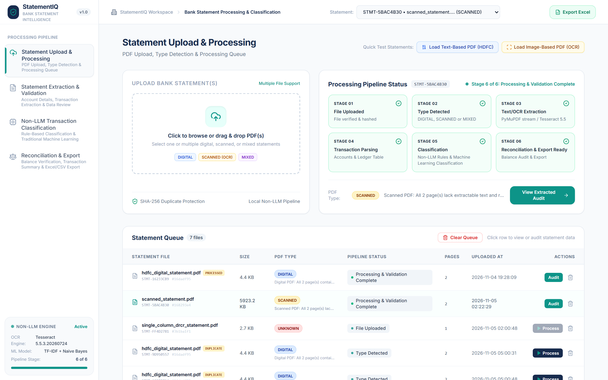
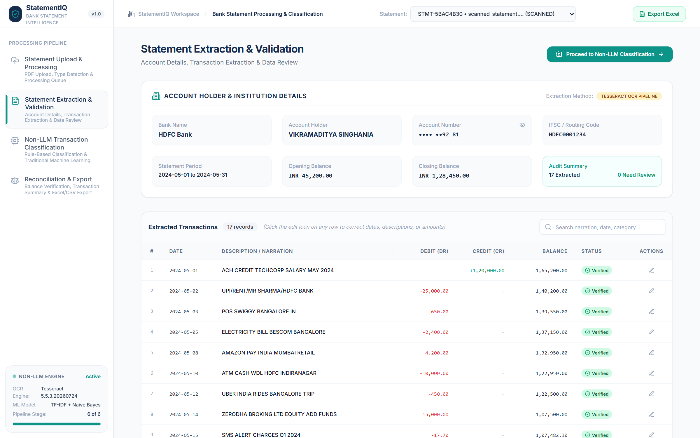
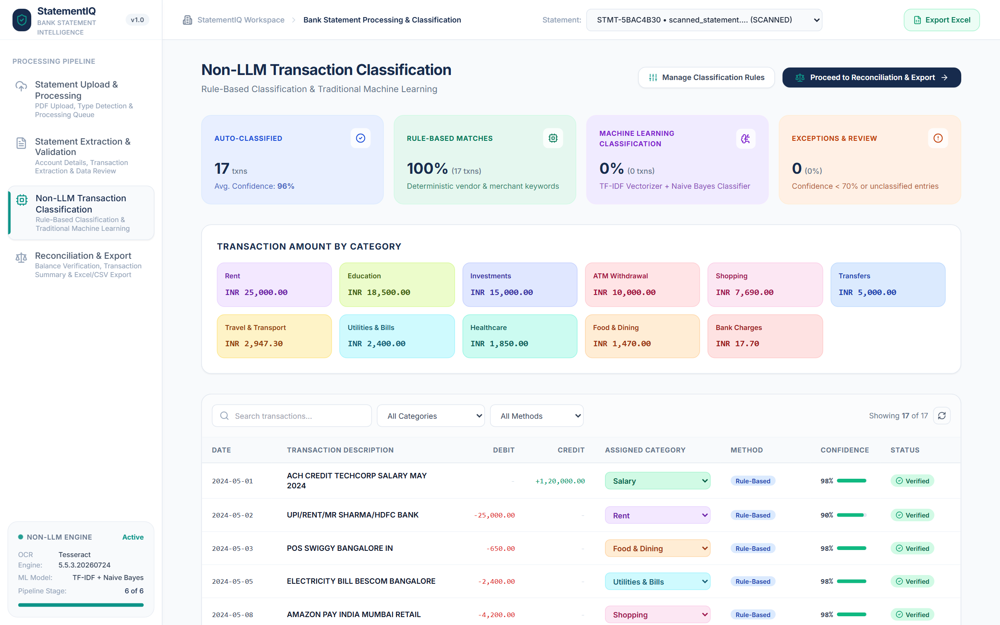
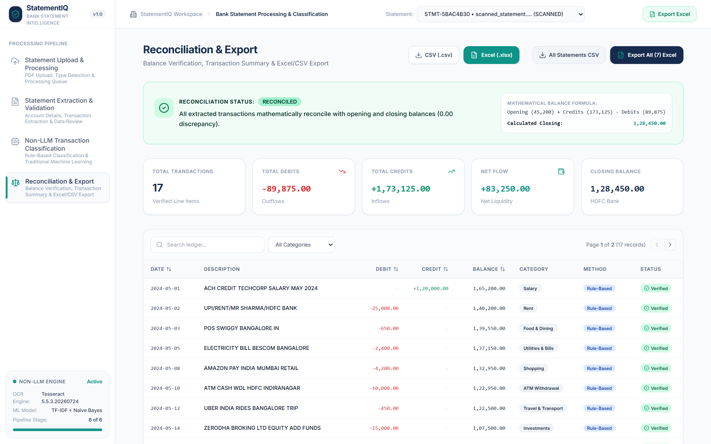

Architecture diagrams, processing flows and implementation notes for a non-LLM bank statement platform combining deterministic rules, computer-vision OCR and classical machine learning.
A complete architecture reference: the system boundary, internal containers, every stage of the processing pipeline, the classification logic, deployment model and the evidence captured from the running application.
| Version | 1.0 — final |
| Date | 05 November 2026 |
| Audience | Technical reviewers, assessors, maintainers |
| System | StatementIQ v1.0 |
| Status | IMPLEMENTED |
Bank statements arrive in incompatible layouts, as native PDFs or degraded scans. StatementIQ turns them into a validated ledger — then classifies every transaction, proves the arithmetic, and exports an audit-ready workbook. No generative AI is used anywhere in the runtime path.
Financial extraction demands reproducibility, privacy and a defensible audit trail. Generative models introduce non-deterministic output, prompt-injection exposure, per-page cost and hallucination risk. StatementIQ replaces that with deterministic parsing and a small, inspectable classical model.
A six-stage pipeline: validate & hash → detect page type → extract text or OCR → parse & reconcile → classify → export. Every decision is traceable to a keyword, a model probability, or a balance equation.
Magic-byte validation, 25 MB cap, SHA-256 duplicate identity, traversal-safe filenames.
Page-level DIGITAL / SCANNED / MIXED routing with 300 DPI OCR and OpenCV cleanup.
Custom rules → merchant heuristics → TF-IDF + Naive Bayes → human review.
Running-balance proof, 7-sheet Excel, portfolio export and injection-safe CSV.
1. Layout-aware extraction. Positional word coordinates are tried first; table grids second; raw text last. A 3-row minimum prevents a single stray line from winning.
2. Safe OCR repair. Ambiguous debit/credit pairs are never guessed. They are corrected only when the running balance uniquely confirms one interpretation; otherwise they are flagged for review.
3. Rules before model. High-specificity merchant rules run before generic rails such as UPI/NEFT, preventing “UPI/SWIGGY” from being lost to Transfers.
| Frontend | React 18.3 · Vite 5.4 · Tailwind 3.4 · Lucide |
| Backend | FastAPI 0.115 · Uvicorn · Pydantic v2 |
| Extraction | PyMuPDF · pdfplumber · OpenCV · Tesseract 5.5 |
| Classification | scikit-learn · TF-IDF (1–2 grams) · Multinomial NB (α=0.2) |
| Outputs | OpenPyXL 7-sheet XLSX · sanitised CSV · portfolio export |
| Quality | 38 pytest tests · 4 UI modules · 24 endpoints |
| No LLM / no external GenAI | System context (§02), four-tier engine (§07), live classifier capture (§12) | implemented |
| Digital + scanned ingestion | Page-level routing (§05), OCR preprocessing (§05), ingestion capture (§12) | implemented |
| Structured extraction & validation | Three-strategy parser, normalisation, flags and OCR repair (§06) | implemented |
| Mathematical reconciliation | Row and statement formulas with ±0.05 tolerance (§06, §12) | implemented |
| Safe multi-format export | 7-sheet workbook, portfolio export, formula sanitisation (§11, §12) | implemented |
| Automated verification | 38 pytest tests + async API smoke script (§14) | 38 passing |
StatementIQ is a self-contained desktop-class web application. A single analyst operates it through a browser; all document processing happens inside the application boundary. The only external runtime dependency is the local Tesseract OCR binary.
One analyst uploads statements, audits extracted rows, corrects fields and downloads reports. No multi-tenant or role model is implemented in v1.
None for inference. Tesseract is a local binary; PyMuPDF, OpenCV, scikit-learn and OpenPyXL are in-process libraries. Hosting platforms are deployment targets only.
PDF bytes → uploads directory; processed aggregate → session JSON; exports stream directly to the browser. Nothing is sent to a third-party API.
| Inbound | PDF bytes + filename from the analyst’s browser. Nothing else is accepted. | local only |
| Outbound to user | Rendered JSON state, XLSX/CSV streams and the HTML/JS bundle. No raw statement is returned by default. | on demand |
| Outbound to vendors | None. There is no inference endpoint, telemetry pipeline or document-storage bucket in the runtime path. | zero |
| Host dependency | Tesseract binary must be installed and discoverable; all other libraries ship with the Python environment. | documented |
The frontend never parses documents. The API layer never contains business logic. Domain services orchestrate focused engines, and every service writes through a single session store. This separation is what makes the pipeline testable end-to-end.
PDF detection, OCR, parsing, classification and reconciliation can each be tested without a browser or a network. The API is a transport adapter, not the system.
One statement is stored as one object: metadata, account details, transactions, reconciliation and classification stats. Save/load is one JSON write, preserving consistency.
Rules live in JSON, the model in joblib artefacts, and every derived number is recomputed on classify. There is no opaque external service in the loop.
Each stage has a single responsibility, a committed artefact and a visible UI state. A statement never jumps ahead: classification refuses to run without parsed transactions, and reconciliation re-runs after classification to prove the final ledger.
No transactions found → stage 4 Parsing Failed with HTTP 422. Missing Tesseract → HTTP 503 with an actionable message. Corrupt or encrypted PDF → HTTP 400, stage 1. Failed statements remain inspectable and can be retried.
Re-uploading the same bytes returns the existing statement identity with upload_status = already_processed or duplicate. Records are never silently duplicated or overwritten; an explicit allow_duplicate flag exists for intentional re-uploads.
| 01 | File uploaded | PDF bytes, SHA-256, filename, size, duplicate status | uploads/ · sessions |
| 02 | Type detected | pdf_type, per-page analysis, confidence, OCR flag | sessions |
| 03 | Extraction | pages[], raw tables, full text, raw OCR text | sessions |
| 04 | Parsing | account header, validated transactions, preliminary reconciliation | sessions |
| 05 | Classification | category, method, confidence, explanation, aggregate stats | sessions |
| 06 | Reconcile & export | final reconciliation verdict, workbook / CSV stream | response only |
A document can mix native text pages with scanned images. StatementIQ counts characters, words, images and vector drawings per page before choosing a route. The document type is an aggregate of those page decisions, and mixed files switch strategy page by page.
Bank statements frequently contain thin decimal points and commas. Rendering at ≈4.17× zoom preserves those glyphs. Rotation is corrected with Tesseract OSD first, then small skew is removed via a minimum-area rectangle. CLAHE rescues faint thermal-printer output; Otsu produces a clean binary image for OCR.
The OCR processor is capped at 10 pages per call (max_pages=10). Longer scanned statements need the cap raised or chunked processing. Scans below ≈150 DPI, severe warping or handwriting remain outside reliable OCR territory and surface as review flags.
| text ≥ 60 chars AND words ≥ 10 | Page is DIGITAL; no OCR is performed. | DIGITAL |
| chars < 60 AND (images > 0 OR drawings > 0) | Page is visual; render and OCR. | SCANNED |
| chars = 0 AND images = 0 AND drawings = 0 | No extractable evidence; reject the document. | UNKNOWN |
| digital_pages > 0 AND (scanned + unknown) > 0 | Hybrid document; route each page independently. | MIXED |
| encrypted · 0 pages · bad header | Rejected before extraction with an actionable message. | HTTP 400 |
| scanned pages > 10 | Only the first 10 pages are OCR’d by the current cap. | LIMIT |
Parsing is deliberately layered: coordinate-aware columns first, table grids second, raw text last. Validation is conservative: flag anomalies, repair only what the running balance proves, and preserve the original value whenever a correction is made.
Labelled fields are searched first, with a known-bank list and line-shape heuristics as fallbacks. Account numbers are masked for display while the full value remains available for audit.
Rows are compared on date, normalised description, amount and direction. Exact matches and same-date/amount candidates are flagged — never deleted automatically.
Verified means the rule confidence is high or the ML probability is ≥0.70. Needs Review means ambiguous, low-confidence or arithmetic-conflicting. Corrected means a human edited it.
| Indian digit grouping | 1,20,000.00 → 120000.00 | OCR commas read as dots | 1.65.200.00 → 165200.00 |
| Single Dr/Cr column | 1,500.00 Dr → debit 1500 | Accounting negatives | (500.00) → −500.00 |
| Wrapped narrations | continuation lines joined to the row | Missing balance column | backfilled from opening + flows |
| Multi-page ledger | page breaks treated as separators, not rows | Currency noise | ₹, INR, Rs. stripped before parse |
Classification resolves in strict priority order. A user rule always wins. A high-specificity merchant always beats a generic payment rail. Only when neither fires does the TF-IDF + Naive Bayes model get a vote — and every outcome is accompanied by a human-readable reason.
“UPI/SWIGGY” must become Food & Dining, not Transfers. Specific merchants are evaluated before channel words, and word-boundary regex avoids matching “CAB” inside “CABIN”.
A rule carries a fixed confidence (0.90–0.98); an ML row carries the actual posterior. The threshold is not cosmetic: it decides Verified vs Needs Review in the UI.
Once a user edits a category, the row is marked Manual Override and reclassification leaves it untouched. The audit history records what changed and when.
| Custom Rule | confidence = 1.00 | Verified — user intent is authoritative. | Verified |
| Rule-Based | 0.90 – 0.98 | Verified if ≥ 0.85; otherwise review. | Verified |
| ML | ≥ 0.70 | Predicted class accepted with high posterior. | Verified |
| ML | 0.45 – 0.699 | Prediction accepted but escalated for audit. | Needs Review |
| Fallback | < 0.45 or no model | Category “Others”, candidates retained, human decides. | Needs Review |
| Manual Override | 1.00 (human) | Preserved across reclassification; audit entry appended. | Corrected |
Metadata, account details, transactions, reconciliation and classification statistics belong to one statement aggregate. The API returns the complete aggregate; the session store persists it as one JSON document. Transaction-level evidence stays attached to the row.
A statement is processed, corrected and exported as a unit. Persisting one document avoids partial writes, orphan rows and inconsistent statistics. The trade-off is that very large ledgers will eventually need a real database and paginated transactions.
No user table, no tenant column, no soft-delete model. v1 is a single-operator assessment build. Authentication and multi-tenancy are listed as production hardening, not pretended to exist.
Every transaction, reconciliation and stats record belongs to exactly one statement. Orphan rows are not representable in the aggregate.
A correction never destroys the prior value. original_ocr_value and the reason are stored alongside the corrected field.
Classification stats and reconciliation are recomputed from the current rows, not incrementally patched — so manual edits cannot leave stale totals.
Every route is under /api and returns typed models. Mutating operations persist the statement aggregate; export routes stream a generated file and never write it to disk. The frontend consumes exactly this surface.
| Method | Path | Purpose | Stage |
|---|---|---|---|
| INGESTION & LIFECYCLE | |||
| POST | /api/statements/upload | Upload one PDF; validate, hash, detect type, queue. | 1–2 |
| POST | /api/statements/upload-batch | Upload multiple PDFs; per-file validation and error collection. | 1–2 |
| GET | /api/statements | List queue metadata for every statement. | — |
| GET | /api/statements/{id} | Full aggregate: metadata, account, rows, reconciliation, stats. | — |
| GET | /api/statements/{id}/transactions | Transaction-only view of a statement. | 4 |
| GET | /api/statements/{id}/results | Compact result envelope for downstream consumers. | 6 |
| POST | /api/statements/{id}/process | Run extraction and parsing (stages 3–4). | 3–4 |
| POST | /api/statements/{id}/classify | Run rules + ML classification and final reconciliation. | 5–6 |
| POST | /api/statements/{id}/retry | Re-run the pipeline from the appropriate stage after failure. | any |
| PUT | /api/statements/{id}/transactions/{txn_id} | Manual correction; recalculates balances and audit history. | 4–6 |
| DEL | /api/statements/{id} | Delete one statement and its uploaded file. | — |
| DEL | /api/statements | Clear the entire queue with filesystem cleanup. | — |
| EXPORTS | |||
| GET | /api/statements/{id}/export/excel | 7-sheet styled statement workbook. | 6 |
| GET | /api/statements/{id}/export/csv | Formula-sanitised transaction CSV. | 6 |
| GET | /api/statements/export/excel | Portfolio workbook across all statements. | 6 |
| GET | /api/statements/export/csv | Combined ledger CSV with source references. | 6 |
| CLASSIFIER & MODEL | |||
| GET | /api/classifier/rules | Active default and custom rule dictionary. | 5 |
| POST | /api/classifier/rules | Register a custom keyword rule with category and priority. | 5 |
| GET | /api/classifier/info | Model status, classes, vocabulary and artefact metadata. | 5 |
| GET | /api/classifier/evaluate | Held-out accuracy, precision, recall, F1 and confusion matrix. | 5 |
| POST | /api/classifier/retrain | Retrain TF-IDF + Naive Bayes from the labelled CSV. | 5 |
| SYSTEM & DIAGNOSTICS | |||
| GET | /api/system | Tesseract availability, model state and runtime health. | — |
| GET | /api/sample-statements | List bundled digital, scanned and edge-case samples. | — |
| POST | /api/sample-statements/{filename}/load | Load a bundled sample into the active queue. | 1 |
JSON for state; multipart for uploads; streaming responses for XLSX/CSV. CORS middleware is enabled for the Vite origin during development.
Pydantic v2 models reject malformed payloads before they reach a service. Upload validation is deeper: bytes, structure, page count and encryption are checked.
400 invalid PDF · 413 oversize · 404 unknown statement · 422 no transactions · 503 OCR unavailable. Errors are actionable and do not erase the statement.
The development topology is deliberately simple: Vite on 5173, FastAPI on 8000, and everything else in-process. For a public demo, the SPA is static-hosted on Vercel and the API runs as a Docker container on Render with Tesseract and OpenCV installed at the OS level.
Tesseract is a native binary and OpenCV needs system graphics libraries. A container pins the OS-level dependencies that a pure Python build would miss.
The frontend has no server-side rendering or secrets. Vercel serves a small bundle from the edge; the API URL is injected at build time.
The Render free tier is a demo, not a durable store. Sessions and uploads are ephemeral by design; the architecture does not pretend otherwise.
| ✓ | Backend image builds | Dockerfile installs Tesseract, language data, libGL and libglib before pip. | required |
| ✓ | Health check passes | GET /health returns {"status":"healthy"}; OCR status is visible at /api/system. | required |
| ✓ | Frontend points at API | VITE_API_URL is set at build time; rebuild after changing it. | required |
| ! | Durable storage attached | Mount a disk for uploads/session JSON or replace with a database + object store. | before real use |
| ! | CORS locked down | Replace the development wildcard with the exact Vercel origin. | before real use |
Financial documents and spreadsheets are both attack surfaces. Uploads are validated as bytes and structure, filenames are sanitised, account numbers are masked, and every exported string is checked for formula injection. The audit trail is designed to survive human error.
| Threat / failure | Control | Implementation |
|---|---|---|
| Malformed or fake PDF | Magic-byte + structural validation; zero-page and encrypted rejection | helpers.validate_pdf_content · PDFDetector.detect |
| Oversized upload | 25 MB hard limit before persistence; HTTP 413 | validate_pdf_content(max_size_mb=25) |
| Duplicate / replay upload | SHA-256 identity; return existing statement instead of creating a duplicate | PDFDetector.calculate_file_hash · process_upload_content |
| Path traversal | Strip directories, control characters and null bytes from filenames | helpers.sanitize_filename |
| Encrypted PDF | Reject with an actionable message; never attempt a blank-password bypass | doc.is_encrypted check |
| Spreadsheet formula injection (CWE-1236) | Prefix strings starting with = + − @ tab or CR with a single quote; keep numerics numeric | sanitize_spreadsheet_value |
| PII exposure | Display account as XXXXXX••••; mask digit runs in logs | mask_account_number · mask_sensitive_log |
| Silent OCR corruption | Correct only when the running balance proves one reading; otherwise flag for review | DataValidator.correct_ocr_amounts |
| Duplicate transactions | Exact and potential matches are flagged; nothing is deleted automatically | DataValidator.detect_duplicate_transactions |
| Arithmetic drift | Row-level and statement-level equations with ±0.05 tolerance; discrepancy surfaced | DataValidator · ReconciliationService |
| Loss of audit trail | Original OCR text, original values, correction reasons and edit history retained | Transaction.original_ocr_value / audit_history |
| State loss on restart | Session aggregate persisted to JSON and rehydrated only if the PDF still exists | routes._save_sessions / _load_sessions |
Authentication & RBAC — v1 has no login; a real deployment needs SSO/session auth and per-user statement isolation. CORS — currently permissive for local development; restrict to the deployed frontend origin. Encryption — uploads and session JSON are plaintext on disk; encrypt at rest or move to an object store with KMS. Rate limiting & malware scanning — not implemented; put them at the edge or API gateway.
The statement never leaves the host for inference. There is no API key to leak, no prompt to inject, no third-party retention policy to audit and no per-token cost. The only outbound traffic is the initial page and static assets — which is exactly the threat model appropriate for sensitive bank documents.
| Field edited | New value persisted in the transaction; original value retained in audit_history[].previous where applicable. |
| OCR correction | original_ocr_value + ocr_correction { field, original, corrected, reason } attached to the row. |
| Status change | review_status moves to Corrected; the classification method becomes Manual Override with confidence 1.00. |
| Downstream effect | Reconciliation and classification stats are recomputed; the Review Flags sheet lists the exception on export. |
The first module is the control room. A drag-and-drop zone accepts one or many PDFs; the stage tracker reflects the selected statement; the queue exposes type, size, hash prefix and per-file actions. Duplicate uploads remain visible as evidence rather than being silently discarded.

Stages 01–06 are shown as a progress board, not a spinner. Each completed stage carries its own check; the current stage is highlighted.
The PDF type chip (DIGITAL / SCANNED / UNKNOWN) is paired with the detection explanation, so the user can see why OCR was or was not used.
SHA-256 prefixes and DUPLICATE / PROCESSED badges expose re-uploads. The original statement is never overwritten.
Two bundled samples load in one click: a native HDFC PDF and an image-based scan that exercises the full OCR route.
| newly_uploaded | First time this byte sequence has been seen; a new statement ID was created. |
| duplicate | Same SHA-256 as an existing statement that has not completed the pipeline; the existing record is returned. |
| already_processed | Same bytes as a completed statement; the user is told which statement it duplicates. |
| error / UNKNOWN | Validation or detection failed; the record remains inspectable and can be retried or deleted. |
The extraction module exposes the account header, the full ledger, per-row status and the running balance. Rows can be corrected inline; saving recalculates totals, re-runs reconciliation and appends an audit entry.

The header shows XXXXXX7281. The full number remains available to the backend for audit, but never in the default view.
Each row contributes to the next balance. The arithmetic is checked at row level and again at statement level.
Verified, Needs Review and Corrected are explicit. A zero-review scan is the happy path; ambiguous OCR would surface here.
The classifier module shows the split between rules and ML, the average confidence, the category spend distribution and an explanation line for every transaction. A user can override a category; the override is preserved on future runs.

The synthetic statement uses recurring Indian merchants and salary narrations that the deterministic tier is designed to catch. That is the intended production behaviour: rules cover the common path, ML handles novel descriptions, and review handles ambiguity. On a less familiar statement the ML and review columns become non-zero.
“WHY: Matched rule-based keyword ‘SWIGGY’” is rendered directly from the stored explanation object. The same object feeds the Classification Explanations sheet in the Excel export.
“Manage Classification Rules” registers a keyword/category pair. Custom rules take absolute precedence and persist to data/custom_rules.json.
“Retrain” refits TF-IDF and Naive Bayes on the labelled CSV, then writes fresh joblib artefacts. Existing statements can be reclassified through the API.
The model info panel exposes classes and vocabulary; /api/classifier/evaluate returns the held-out confusion matrix and per-category metrics.
The final module displays the reconciliation verdict, the exact formula with real values, KPI cards and the complete ledger. Every export is one click away: a styled 7-sheet workbook, a safe CSV, or a portfolio roll-up across statements.

| 1 | Account Details — institution, holder, masked account, IFSC, period, balances |
| 2 | Transactions — formatted debit/credit/balance, category, method, confidence, totals |
| 3 | Summary — net flow, discrepancy, reconciliation notes |
| 4 | Income by Category — credit aggregation and share |
| 5 | Expense by Category — debit aggregation and share |
| 6 | Review Flags — exceptions, duplicates, OCR corrections |
| 7 | Classification Explanations — method, keyword, probability breakdown |
Formatting contract. Monetary cells are native numbers with #,##0.00 formatting, headers are navy with white type, columns auto-fit, and the Transactions sheet carries a totals row. Sheet names remain stable for downstream automation.
The green banner is produced by is_reconciled, not by a hard-coded success. If the arithmetic differs by more than ₹0.05, the same banner turns red and names the variance. Missing balances produce a third state: “Missing Balance Information”.
All processed statements can be combined into one workbook: statement summaries, combined transactions with source IDs, combined income/expense and a consolidated review queue. Duplicate rows are never silently merged.
Any text beginning with = + − @, tab or carriage return is prefixed with an apostrophe before export. Numeric cells remain numbers so formulas still calculate.
The ML tier is evaluated on a stratified 25% holdout with a fixed random seed. It is a fallback classifier for narrations the rule engine does not recognise — not a claim of production-grade accuracy on unseen banks.
Weighted averages, held-out 53 samples. Model: TF-IDF 1–2 grams + Multinomial Naive Bayes, α=0.2, random_state=42.
| Category | Train+Test | F1 |
|---|---|---|
| Food & Dining | 22 | 0.667 |
| Shopping | 22 | 0.471 |
| Salary | 17 | 0.533 |
| Travel & Transport | 17 | 0.444 |
| Utilities & Bills | 16 | 0.571 |
| Investments | 12 | 0.000 |
| Transfers | 12 | 1.000 |
| Bank Charges | 12 | 0.667 |
| Rent | 11 | 0.400 |
| Healthcare | 11 | 0.000 |
| EMI/Loan | 10 | 1.000 |
| Education | 10 | 0.400 |
Synthetic Indian banking narrations with merchants, typos and abbreviations. The corpus is intentionally small and balanced only loosely; rare classes drag weighted metrics down.
No test leakage: the vectorizer is fitted only on the training split, then applied to the holdout. The evaluation endpoint re-runs the split rather than reporting cached training accuracy.
Rule coverage is measured on every statement. In the live demo, 100% of 17 rows were rule-classified at 96% average confidence; the ML tier had no vote. That is the point.
The evaluation endpoint re-runs the split; it does not return a cached score. From the UI, open the classifier module and request evaluation; from the shell:
Transfers and EMI/Loan score 1.000 because the test split contains a handful of highly distinctive narrations. That is not evidence of generalisation. The same applies to 0.000 classes: two samples cannot support a stable F1.
The right production metric is rules-first coverage (how many rows avoid ML entirely) plus review rate — not raw model accuracy.
The suite covers extraction, OCR, detection, queue behaviour, duplicate protection, export security and end-to-end flows. The interesting tests are not the happy path: they are the corrupt PDFs, the ambiguous OCR rows and the spreadsheet formula payloads.
| Suite | Tests | What it proves |
|---|---|---|
| test_extraction_scenarios.py | 8 | Multi-page continuity, wrapped narrations, single-column Dr/Cr, missing balances, format variants. |
| test_exports_security_and_e2e.py | 7 | Formula injection neutralised, all 7 sheets present, portfolio export, end-to-end upload → process → classify → export. |
| test_pipeline.py | 6 | Stage transitions, no-transaction failure, reconciliation arithmetic, classification stats and explanations. |
| test_queue_and_detection.py | 6 | DIGITAL / SCANNED / MIXED / UNKNOWN detection, corrupt and zero-byte rejection, encrypted handling. |
| test_scanned_ocr_and_validation.py | 6 | OCR preprocessing, rotation/deskew, balance-verified correction, ambiguity stays flagged. |
| test_duplicates_and_model_info.py | 5 | SHA-256 duplicate identity, re-upload semantics, model metadata and rules registry. |
Synthetic PDFs are generated for each layout: 3-page digital, mixed digital/scan, rotated 90°, wrapped narration, no-balance ledger and a single-column Dr/Cr statement. Corrupt, zero-byte, empty and encrypted files are created as negative fixtures.
Windows · Python 3.13.2 · Node 24.14 · Tesseract 5.5.3 · pytest 8.x. The suite is deterministic: fixed seeds, local files, no network. The only host prerequisite is a discoverable Tesseract binary for the OCR cases.
StatementIQ is complete for the assessment scope: a local, auditable, non-LLM pipeline with a working UI, exports and tests. It is not a production banking platform. The boundary is drawn explicitly so the next engineer knows exactly where to start.
OCR accuracy drops with low DPI, warping, faint thermal print or handwriting. The pipeline can flag uncertainty, but it cannot invent missing glyphs. Below ≈150 DPI, manual review is expected.
The parser handles standard column layouts and multi-line narrations, not arbitrary free-form prose. A bank with an unusual narrative statement may need a dedicated template.
OCR is capped at 10 pages per document call (max_pages=10). Long scanned statements need the cap raised or chunked processing before production use.
Password-protected statements are rejected, not cracked. The user must decrypt before upload. This is deliberate: bypassing document encryption is not a feature.
No authentication, no tenancy, no durable database. Session JSON and uploads live on the local filesystem; a free Render instance loses them on redeploy. Fine for a demo, not for a bank.
PostgreSQL for the statement aggregate, object storage for PDFs, per-user ownership and role checks. This is the first thing to build before any real user touches the system.
Platt scaling or isotonic regression so “0.62” means 62% empirically, not just a raw Naive Bayes posterior. Add a proper confusion-matrix report per bank.
Declarative column maps for HDFC, ICICI, SBI, Axis and international formats. A template match should beat generic positional parsing.
PP-Structure or a small LayoutLM-class model running offline to detect table regions before OCR. No generative AI, no cloud call.
Move OCR/parse/classify to a background worker with progress events. The current synchronous request is fine for a 2-page sample, not for a 200-page portfolio.
start_servers.bat
http://localhost:5173
http://127.0.0.1:8000/docs
python -m pytest backend/tests -v
cd frontend && npm run build
README.md for setup; this document for architecture; the running UI for behaviour. All three should agree — and they do.